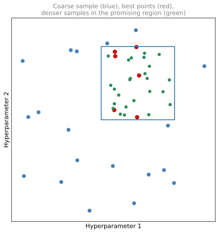
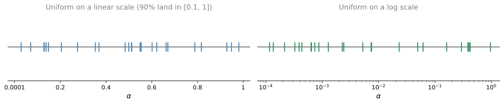
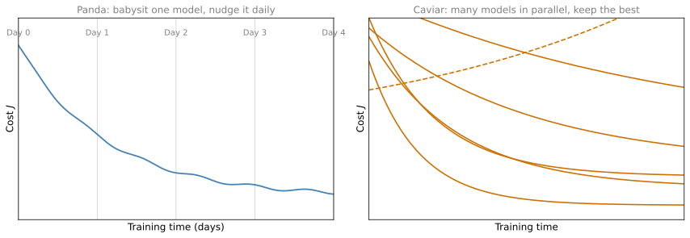

Hyperparameter Tuning
deep-learning
hyperparameter-tuning
random-search
log-scale
Which hyperparameters to tune first, random search versus grid search, coarse to fine sampling, log scales, and panda versus caviar tuning.
By now you have seen that training a neural network involves setting a lot of different hyperparameters, from the learning rate \(\alpha\) to the momentum term \(\beta\) to the mini-batch size. How do you go about finding a good setting for all of them? This page collects guidelines for organizing the search systematically, so that you converge on a good setting of the hyperparameters more efficiently.
Tuning Process
One of the painful things about training deep networks is the sheer number of hyperparameters you have to deal with. There is the learning rate \(\alpha\), the momentum term \(\beta\) if you are using momentum, and the hyperparameters of the Adam optimization algorithm, which are \(\beta_1\), \(\beta_2\), and \(\varepsilon\). You may have to pick the number of layers \(L\), the number of hidden units \(n^{[l]}\) for the different layers, whether to use learning rate decay rather than a single fixed \(\alpha\), and of course the mini-batch size.
Which Hyperparameters Matter Most
It turns out that some of these hyperparameters are more important than others. For most learning applications, the learning rate \(\alpha\) is the most important hyperparameter to tune. After \(\alpha\), the next tier consists of three hyperparameters. The momentum term \(\beta\), for which 0.9 is a good default. The mini-batch size, tuned to make sure the optimization algorithm runs efficiently. And the number of hidden units. Third in importance come the number of layers, which can sometimes make a huge difference, and learning rate decay. Finally, when using Adam, the values \(\beta_1\), \(\beta_2\), and \(\varepsilon\) are pretty much never tuned. The defaults 0.9, 0.999, and \(10^{-8}\) almost always stay as they are, although you can try tuning them if you wish.
This ranking gives a rough sense of the priorities, but it is not a hard and fast rule, and other deep learning practitioners may well disagree or have different intuitions.
Try Random Values, Not a Grid
If you are trying to tune some set of hyperparameters, how do you select the values to explore? In earlier generations of machine learning algorithms, with two hyperparameters, it was common practice to sample the points in a grid and systematically explore all the combinations. With a five by five grid you try out 25 points and pick whichever works best. This practice works okay when the number of hyperparameters is relatively small.
In deep learning, what we tend to do instead is choose the points at random. Pick the same number of points, say 25, and try the hyperparameters on this randomly chosen set.
The reason is that it is difficult to know in advance which hyperparameters are going to be the most important for your problem, and as the previous ranking suggested, some hyperparameters matter much more than others. To take an extreme example, suppose hyperparameter 1 is \(\alpha\), the learning rate, and hyperparameter 2 is the \(\varepsilon\) in the denominator of Adam. Your choice of \(\alpha\) matters a lot and your choice of \(\varepsilon\) hardly matters. If you sample in the grid, you have really tried out only five values of \(\alpha\), and you may find that all the different values of \(\varepsilon\) give essentially the same answer. You have trained 25 models but explored only five values of the hyperparameter that really counts. If instead you sample at random, you try out 25 distinct values of \(\alpha\), so you are more likely to find one that works really well.
This example used just two hyperparameters. In practice you might be searching over many more. With three hyperparameters you are searching over a cube instead of a square, and sampling at random within the cube lets you try a lot more values of each of the three. With even more hyperparameters, it is often just hard to know in advance which ones will turn out to be the really important ones for your application, and sampling at random rather than in a grid means you explore the set of possible values more richly for the most important hyperparameters, whatever they turn out to be.
Coarse to Fine
Another common practice when sampling hyperparameters is a coarse to fine sampling scheme. Suppose that in the two-dimensional example you sample a set of points and find that one point works best, and a few other points around it also tend to work well. In a coarse to fine scheme you then zoom in to a smaller region of the hyperparameter space around those points and sample more densely within it, again perhaps at random. After the coarse sample of the whole square has told you where the best settings seem to live, you focus more of your resources on searching within that smaller square.

By trying out these different values of the hyperparameters, you can then pick whichever value does best on your training set objective, or best on your development set, or whatever metric you are trying to optimize in the search process. The two key takeaways are to use random sampling and adequate search, and optionally to consider a coarse to fine search process. There is more to hyperparameter search than this, though. The next section looks at how to choose the right scale on which to sample the hyperparameters.
Review Questions
1. Rank the following hyperparameters by how important they typically are to tune: number of layers, learning rate \(\alpha\), Adam’s \(\beta_1, \beta_2, \varepsilon\), mini-batch size.
TipAnswer
The learning rate \(\alpha\) is the most important. The mini-batch size sits in the second tier, together with the momentum term \(\beta\) and the number of hidden units. The number of layers is in the third tier, together with learning rate decay. Adam’s \(\beta_1\), \(\beta_2\), and \(\varepsilon\) are pretty much never tuned; the defaults 0.9, 0.999, and \(10^{-8}\) are used. This ranking is a guideline, not a hard and fast rule.
1. You have the budget to train 25 models over two hyperparameters. Why is choosing the 25 settings at random usually better than a 5 by 5 grid?
TipAnswer
It is hard to know in advance which hyperparameter matters most for your problem. If one of the two (say \(\alpha\)) dominates and the other (say Adam’s \(\varepsilon\)) hardly matters, the grid gives you only 5 distinct values of the important hyperparameter, because each value of \(\alpha\) is repeated across the 5 values of \(\varepsilon\). Random sampling gives 25 distinct values of every hyperparameter, so you are more likely to find a value of the important one that works really well. The advantage grows in higher dimensions, where you sample within a cube or beyond.
1. What is a coarse to fine sampling scheme?
TipAnswer
First sample the whole hyperparameter space coarsely, at random. If the best-performing points cluster in some region, zoom in to a smaller region around them and sample more densely within it, again perhaps at random. This focuses your resources on the part of the space where the best setting seems to live.
Picking an Appropriate Scale
Sampling at random can allow you to search over the space of hyperparameters more efficiently, but sampling at random does not mean sampling uniformly at random over the range of valid values. It is important to pick the appropriate scale on which to explore the hyperparameters.
When a Uniform Scale Is Fine
Say you are trying to choose the number of hidden units \(n^{[l]}\) for a given layer \(l\), and you think a good range is somewhere from 50 to 100. Picking values at random along the number line from 50 to 100 is a perfectly visible way to search this hyperparameter. Or if you are deciding on the number of layers \(L\), and you think the total should be somewhere between 2 and 4, then sampling uniformly at random among 2, 3, and 4 is reasonable, and even a grid search over the values 2, 3, and 4 is reasonable. These are examples where sampling uniformly at random over the range you are contemplating is a fine thing to do. But this is not true for all hyperparameters.
Log Scale for the Learning Rate
Suppose you are searching for the learning rate \(\alpha\), and you suspect 0.0001 might be on the low end while it could be as high as 1. If you draw the number line from 0.0001 to 1 and sample uniformly at random over it, about 90% of the values you sample will be between 0.1 and 1. You would be using 90% of your resources to search between 0.1 and 1 and only 10% to search between 0.0001 and 0.1, which does not seem right.
Instead it is more reasonable to search on a log scale, with 0.0001, then 0.001, 0.01, 0.1, and 1 spaced evenly, and to sample uniformly at random on this logarithmic scale. Now you have as many resources dedicated to searching between 0.0001 and 0.001 as between 0.001 and 0.01, and so on.

In Python, the way you implement this is
r = -4 * np.random.rand() # r is uniform between -4 and 0
alpha = 10 ** r # alpha is between 10^-4 and 10^0After the first line, r is a random number between \(-4\) and \(0\), so \(\alpha\) lands between \(10^{-4}\) and \(10^{0} = 1\).
In the more general case, if you are trying to sample between \(10^{a}\) and \(10^{b}\) on the log scale, you figure out \(a\) by taking \(\log_{10}\) of the low value (here \(\log_{10} 0.0001 = -4\)) and \(b\) by taking \(\log_{10}\) of the high value (here \(\log_{10} 1 = 0\)). Then you sample \(r\) uniformly at random between \(a\) and \(b\), and set the hyperparameter to \(10^{r}\).
Sampling \(\beta\) for Exponentially Weighted Averages
One other tricky case is sampling the hyperparameter \(\beta\) used for computing exponentially weighted averages. Suppose you suspect \(\beta\) should be somewhere between 0.9 and 0.999. Remember that using 0.9 is like averaging over the last 10 values, kind of like a 10-day temperature average, whereas 0.999 is like averaging over the last 1,000 values. As with the learning rate, it does not make sense to sample uniformly at random between 0.9 and 0.999 on the linear scale.
The best way to think about this is to explore the range of values for \(1 - \beta\) instead, which now ranges from 0.1 down to 0.001, that is, from \(10^{-1}\) to \(10^{-3}\). Note that where the learning rate range had the small value on the left and the large value on the right, here it is reversed. Using the method above, sample \(r\) uniformly at random from \(-3\) to \(-1\), set \(1 - \beta = 10^{r}\), and so
\[ \beta = 1 - 10^{r} \]
This becomes your randomly sampled value of the hyperparameter, chosen on the appropriate scale. This way you spend as much of your resources exploring the range 0.9 to 0.99 as you spend exploring 0.99 to 0.999.
For a more formal justification of why sampling on a linear scale is such a bad idea here, consider how sensitive the results are to changes in \(\beta\) when \(\beta\) is close to 1. If \(\beta\) goes from 0.9 to 0.9005, it is no big deal; in both cases you are averaging over roughly 10 values. But if \(\beta\) goes from 0.999 to 0.9995, this has a huge impact on what your algorithm is doing, because the exponentially weighted average jumps from about the last 1,000 examples to the last 2,000. The formula \(\frac{1}{1 - \beta}\) is very sensitive to small changes in \(\beta\) when \(\beta\) is close to 1. Sampling on the log scale of \(1 - \beta\) causes you to sample more densely in the region where \(\beta\) is close to 1 (equivalently, where \(1 - \beta\) is close to 0), so the samples are distributed more efficiently over the space of possible outcomes.
In case you do not end up making the right scaling decision on some hyperparameter, do not worry too much about it. Even if you sample on the uniform scale where some other scale would have been superior, you may still get okay results, especially if you use a coarse to fine search, so that later iterations focus in on the most useful range of values.
Review Questions
1. You want to sample the learning rate \(\alpha\) between 0.0001 and 1. Why is sampling uniformly at random over this range wasteful, and how should you sample instead?
TipAnswer
Uniform sampling on the linear scale puts about 90% of the samples between 0.1 and 1 and only 10% between 0.0001 and 0.1, so most of the range is barely explored. Instead sample on a log scale. Take \(a = \log_{10} 0.0001 = -4\) and \(b = \log_{10} 1 = 0\), draw \(r\) uniformly at random between \(a\) and \(b\) (in Python, r = -4 * np.random.rand()), and set \(\alpha = 10^r\). This dedicates equal resources to each decade of the range.
1. How should you sample \(\beta\) for an exponentially weighted average over the range 0.9 to 0.999, and why not uniformly?
TipAnswer
Explore \(1 - \beta\), which ranges from \(10^{-1}\) down to \(10^{-3}\), on a log scale. Sample \(r\) uniformly from \(-3\) to \(-1\), set \(1 - \beta = 10^r\), so \(\beta = 1 - 10^r\). Uniform sampling of \(\beta\) is a bad idea because \(\frac{1}{1-\beta}\), the effective number of values averaged, is extremely sensitive to small changes in \(\beta\) near 1. Moving from 0.9 to 0.9005 changes almost nothing (still roughly a 10-value average), while moving from 0.999 to 0.9995 doubles the average from about 1,000 to about 2,000 values. The log scale samples more densely where \(\beta\) is close to 1.
Tuning in Practice: Pandas vs. Caviar
Before wrapping up the discussion of hyperparameter search, here are a couple of final tips and tricks for how to organize the search process.
Intuitions Get Stale
Deep learning today is applied to many different application areas, and intuitions about hyperparameter settings from one application area may or may not transfer to another. There is a lot of cross-fertilization among domains. Ideas developed in the computer vision community, such as ConvNets or ResNets (covered in a later course), have been applied successfully to speech, and ideas first developed in speech have been applied successfully in NLP. One nice development in deep learning is that people from different application domains increasingly read research papers from other domains to look for inspiration.
In terms of hyperparameter settings, though, intuitions do get stale. Even if you work on just one problem, you might find a good setting of the hyperparameters and keep developing your algorithm, or see your data gradually change over the course of several months, or just upgrade the servers in your data center. Because of changes like those, the best setting of your hyperparameters can get stale. So it is worth retesting or re-evaluating your hyperparameters at least once every several months to make sure you are still happy with the values you have.
Babysitting One Model vs. Training Many in Parallel
Finally, in terms of how people actually go about searching for hyperparameters, there are maybe two major schools of thought.
One way is to babysit a single model. You usually do this if you have a huge dataset but not a lot of computational resources, not a lot of CPUs and GPUs, so you can afford to train only one model or a very small number of models at a time. On Day 0 you initialize the parameters at random and start training, watching the learning curve, maybe the cost function \(J\) or a dataset error, gradually decrease over the first day. At the end of Day 1 you might say the model is learning quite well and try increasing the learning rate a little bit. Maybe it does better, and that is your Day 2 performance. After two days it is still doing well, so you nudge the momentum term a bit or decrease the learning rate a bit, and now you are into Day 3. Every day you look at the model and try nudging the hyperparameters up or down, and if one day you find the learning rate was too big, you go back to the previous day’s model. You are babysitting the model one day at a time, even as it trains over many days or several weeks. People who do this are watching performance and patiently nudging the learning rate up and down, usually because they do not have enough computational capacity to train many models at once.
The other approach is to train many models in parallel. You pick one setting of the hyperparameters and just let the model run by itself for a day or several days, producing some learning curve. At the same time you start up a second model with a different setting of the hyperparameters, which generates a different learning curve, maybe a better-looking one. At the same time you might train a third model, and a fourth whose curve diverges, and so on. You train many different models in parallel and at the end quickly pick the one that works best.

To make an analogy, the first approach is the panda approach. When pandas have children, they have very few, usually one at a time, and they put a lot of effort into making sure the baby panda survives. That is really babysitting, one model or one baby panda. The second approach is more like what fish do, so call it the caviar strategy. Some fish lay over 100 million eggs in one mating season, do not pay too much attention to any one of them, and just see that hopefully one of them, or a bunch of them, will do well. That is the difference between how mammals reproduce and how fish and a lot of reptiles reproduce, and panda versus caviar is more fun and memorable.
The way to choose between the two approaches is really a function of how much computational resource you have. If you have enough computers to train a lot of models in parallel, then by all means take the caviar approach and try a lot of different hyperparameter settings. But in some application domains, such as online advertising and some computer vision applications, there is so much data and the models are so big that it is difficult to train many models at the same time, and those communities use the panda approach a bit more, babying a single model along and nudging its parameters up and down. Although, of course, even in the panda approach, having trained one model and seen it work or not work, you might initialize a different model in the second or third week and baby that one along, just as pandas can have multiple children over a lifetime, even if only one, or a very small number, at any one time.
It turns out there is one other technique that can make your neural network much more robust to the choice of hyperparameters. It does not work for all neural networks, but when it does, it can make hyperparameter search much easier and training much faster. That technique is the subject of a later section.
Review Questions
1. Why should you re-evaluate your hyperparameter settings every several months, even on a problem you have worked on for a long time?
TipAnswer
Intuitions about good hyperparameter settings get stale. Your algorithm keeps developing, your data may gradually change over the course of months, and even infrastructure changes such as upgraded servers can shift the best settings. Retesting or re-evaluating the hyperparameters at least once every several months makes sure you are still happy with the values you have.
1. Describe the panda and caviar approaches to hyperparameter search. What determines which one you should use?
TipAnswer
In the panda approach you babysit a single model, watching its learning curve day by day and nudging hyperparameters such as the learning rate or momentum up and down as it trains, reverting to the previous day’s model when a change hurts. In the caviar approach you train many models in parallel with different hyperparameter settings, let them run, and pick the one whose learning curve looks best at the end. The choice is a function of computational resources. With enough machines to train many models at once, use the caviar approach. With a huge dataset and limited compute, so that you can afford to train only one or a very few models at a time (common in online advertising and some computer vision applications), use the panda approach.